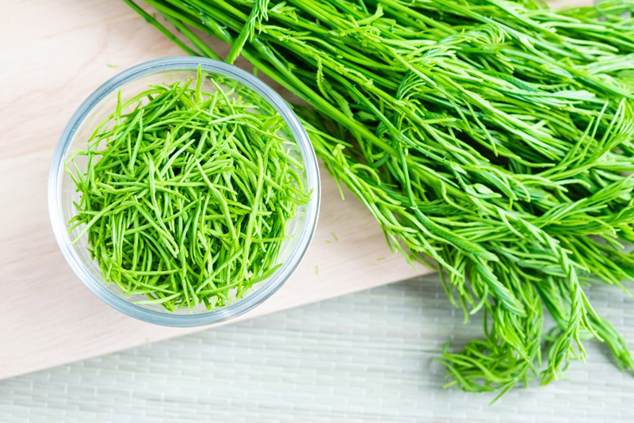
ชะอม
Cha-om / Acacia pennata
ยอดอ่อนมีรสมันและกลิ่นฉุนเฉพาะตัว ยอดนิยมนำไปทอดไข่ชะอมคู่กับน้ำพริกกะปิ

ยอดอ่อนมีรสมันและกลิ่นฉุนเฉพาะตัว ยอดนิยมนำไปทอดไข่ชะอมคู่กับน้ำพริกกะปิ
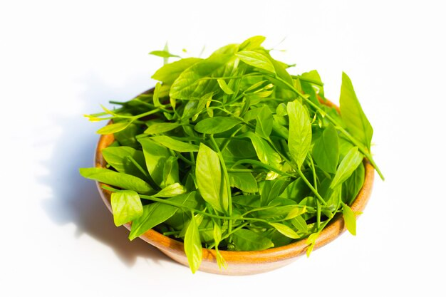
ราชินีผักป่ารสหวานตามธรรมชาติ กรอบอร่อย เหมาะสำหรับแกงเลียงและต้มจืดหมูสับ
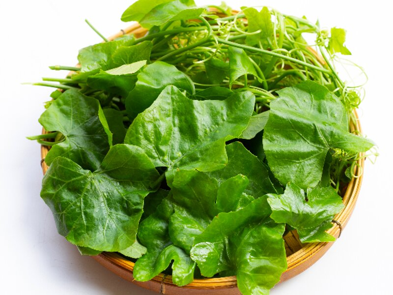
ไม้เลื้อยริมรั้วดูแลง่าย รสจืดเย็น ธาตุอาหารสูง ช่วยบำรุงสายตาและระบบขับถ่าย
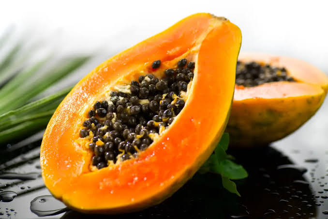
ผลดิบทำส้มตำกรุบกรอบ ผลสุกเนื้อสีส้มรสหวานฉ่ำ เอนไซม์ปาเปนช่วยย่อยอาหารได้ดีเยี่ยม
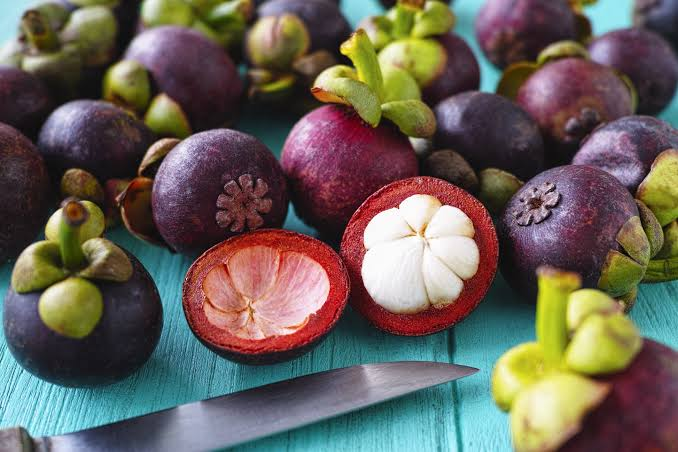
ราชินีแห่งผลไม้ไทย เนื้อขาวบริสุทธิ์ รสชาติหวานอมเปรี้ยว สดชื่นคลายร้อน
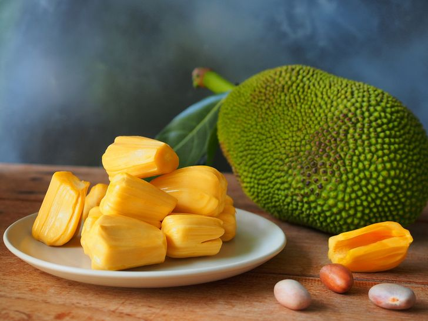
ยวงสีเหลืองทองรสหวานหอมกรอบ ส่วนผลอ่อนนำมาปรุงแกงคั่วหรือตำขนุนรสเลิศ
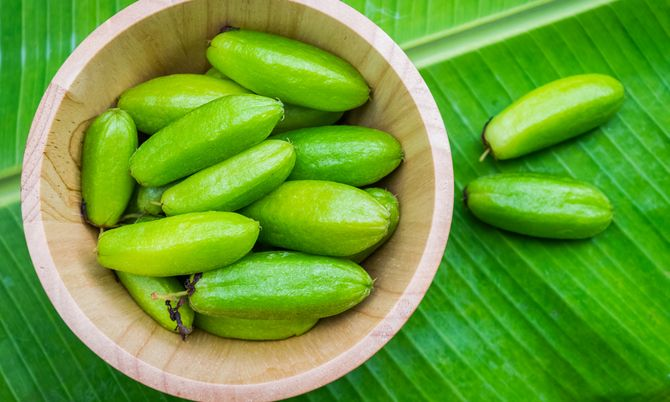
ผลไม้รสเปรี้ยวจี๊ดถึงใจ นิยมนำมาใส่ต้มยำ ยำ หรือทานคู่กับกะปิหวานเติมความสดชื่น
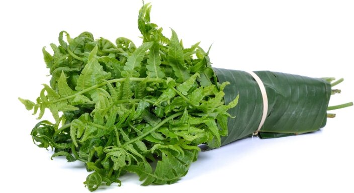
เฟิร์นทานได้ที่เจริญเติบโตเฉพาะแหล่งน้ำสะอาด ยอดม้วนกรอบ เหมาะทำยำผักกูดกุ้งสด
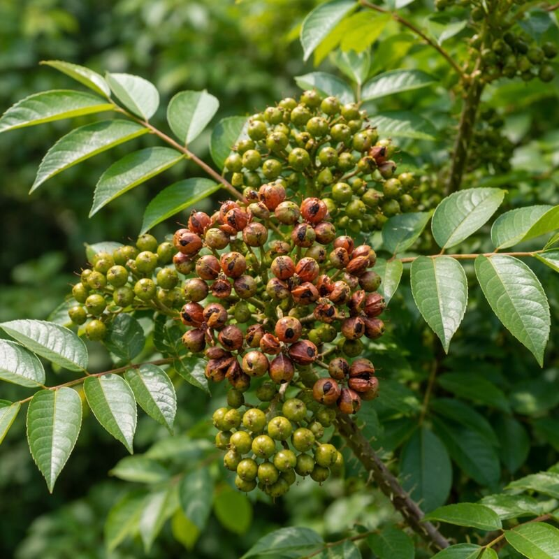
เครื่องเทศล้านนาเอกลักษณ์ กลิ่นหอมซ่าเป็นเอกลักษณ์ นิยมใส่ในลาบคั่วและแกงแค
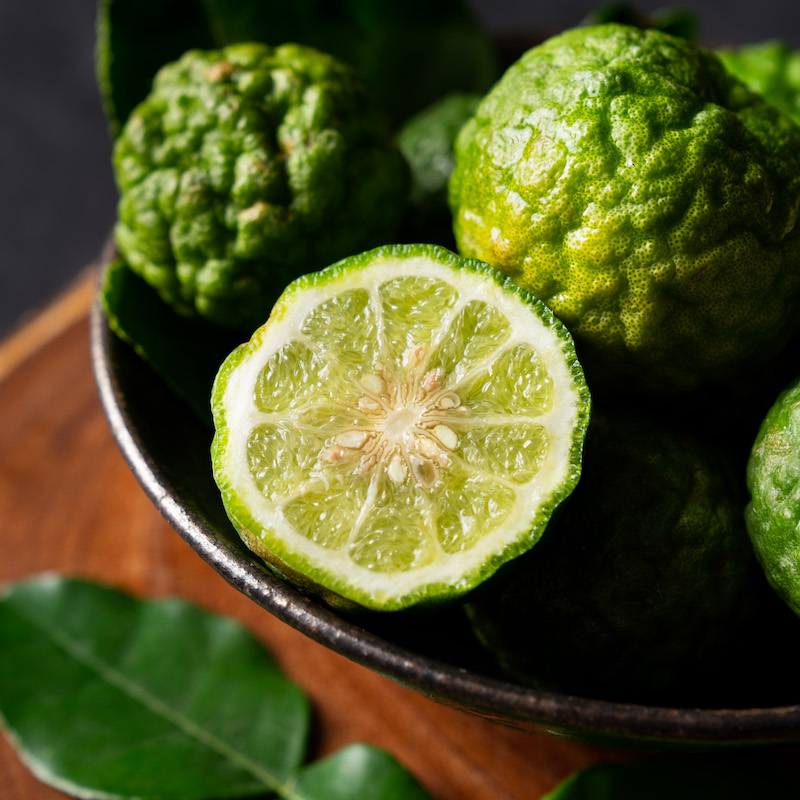
ผิวมะกรูดและใบหอมฉุน ขาดไม่ได้ในต้มยำและพริกแกง มีน้ำมันหอมระเหยช่วยให้ผ่อนคลาย
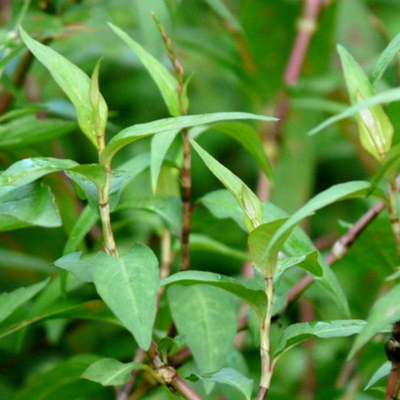
ผักพื้นบ้านกลิ่นหอมฉุน รสเผ็ดปร่าเล็กน้อย นิยมกินแนมกับลาบ น้ำตก และข้าวยำปักษ์ใต้
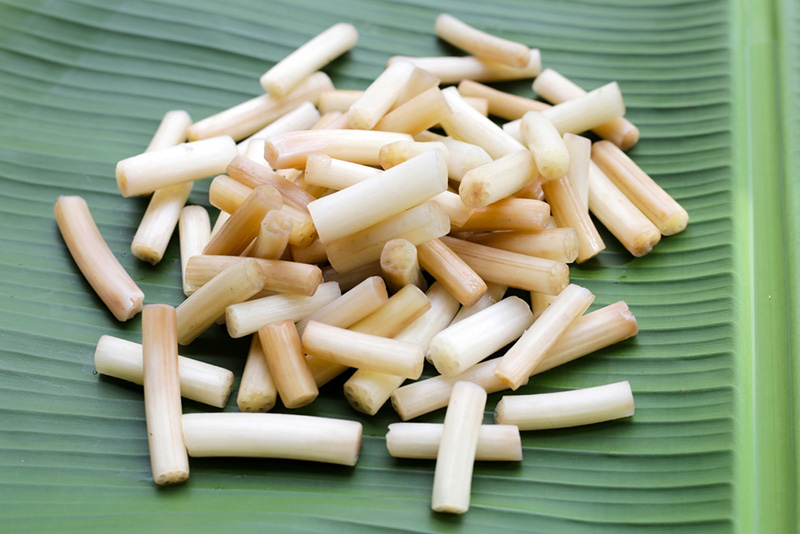
พืชน้ำ ก้านดอกบัวสายอุ้มน้ำ รสจืดกรอบหวานอ่อนๆ นิยมนำมาทำต้มกะทิสายบัวปลาทูสดรสกลมกล่อม